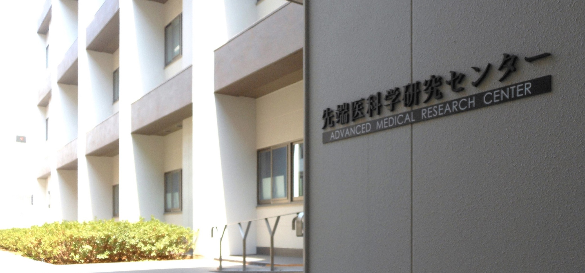

Yokohama City University (YCU) is a prominent and dynamically growing Education & Research Institution in Japan. In 2006, Advanced Medical Research Center (AMRC/SENTANKEN) was formed to help YCU’s mission of enhancing and promoting medically-relevant research through various industry and academic collaborations.

Bioinformatics Laboratory (BI Lab) was first formed as a lab within AMRC (2009) and
it has existed in its current form since August 2020.
Our main mission is to conduct biologically-relevant research to enhance clinical and medical discoveries.
The lab is also involved in bioinformatics education across Japan.
We are always looking for motivated domestic & international researchers for collaborating/joining our lab!
Our office is located at YCU Medical Campus - easily accessible from Yokohama/Tokyo (0.5/1hr by train).
Advanced Medical Research Center (P404)
3–9 Fukuura, Kanazawa-ku
236–0004 Yokohama, Japan
横浜市立大学 先端医科学研究センター (P404)
〒236–0004 神奈川県
横浜市金沢区福浦3–9